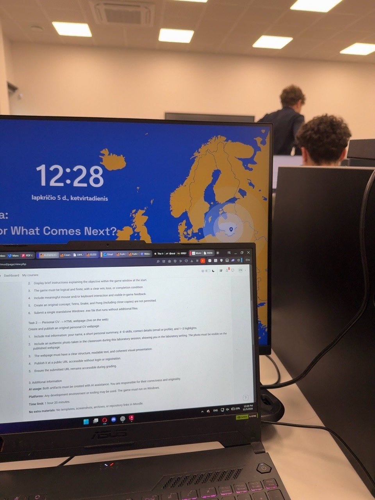

Profile
I enjoy learning by building. My current focus is creating small, complete applications—from an idea and game logic to an understandable interface and a finished executable.
Student developer interested in practical software, clear interfaces, and using AI thoughtfully to turn ideas into working digital projects.
eralnaghiyev@gmail.com
I enjoy learning by building. My current focus is creating small, complete applications—from an idea and game logic to an understandable interface and a finished executable.